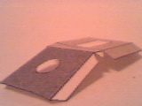

|
Carro de Bombeiros
Instruções de Montagem
|

|
|
|
A montagem do carro requer pouca habilidade. Já a escada dá um pouco mais de trabalho.
Execute a montagem por etapas.
Veja as dicas antes de iniciar a montagem.
BOA SORTE!
|
|
|
|
Carro de Bombeiros (11/04/2001)
|

|
Este modelo está dividido em duas partes : Carro e Escada. Cada qual está em uma folha impressa distinta
.
As peças foram numeradas para auxiliar na identificação.
 Aguarde a secagem da cola antes de executar a etapa seguinte.
Aguarde a secagem da cola antes de executar a etapa seguinte.
CARRO:
Recorte e dobre a peça 1. Observe que na parte inferior da traseira há uma saliência, para formar
uma pequena plataforma (veja figura). Ela será usada na finalização da montagem do carro.
Monte a peça, que não tem a parte inferior. Ela será fechada posteriormente pela peça 4.
 Recorte as seis peças 5 (rodas internas) e cole-as no verso das quatro rodas que estão na peça 1.
Espalhe cola na superfície interna de cada roda e coloque a peça 5, sem fazer pressão ainda.
Deslize a peça 5 até que fique bem alinhada à roda. Uma vez alinhadas, pressione-as para fixá-las
definitivamente.
Recorte as seis peças 5 (rodas internas) e cole-as no verso das quatro rodas que estão na peça 1.
Espalhe cola na superfície interna de cada roda e coloque a peça 5, sem fazer pressão ainda.
Deslize a peça 5 até que fique bem alinhada à roda. Uma vez alinhadas, pressione-as para fixá-las
definitivamente.
Coloque as duas outras peças 5 nas rodas da peça 2, antes de monta-la. Ao montar a peça,
observe que a parte inferior do pára-choque não deve ser colada (veja figura).

Recorte, dobre e monte a peça 3. Deixe as duas laterais cinzas (soleiras) para fora (veja figura).
Elas serão coladas à peça 4 posteriormente.
Recorte a peça 4, que é a base do carro. Inicie a montagem das peças sobre ela. Cole a peça 2 numa
das extremidades, tomando muito cuidado para que elas
 fiquem bem alinhadas. Cole agora o para-choque, que deverá envolver a extremidade da peça 4.
fiquem bem alinhadas. Cole agora o para-choque, que deverá envolver a extremidade da peça 4.
Junte a peça 3 ao conjunto formado pela peça 4 e peça 2. Novamente preste muita atenção com o
alinhamento. Observe que as duas abas cinzas da peça 3 formarão uma soleira de cada lado do carro.
Junte a peça 1 ao conjunto de peças montado. Procure colar iniciando com a lateral da peça 3. A
 última etapa é a colagem da traseira, que deve formar uma pequena plataforma (soleira).
última etapa é a colagem da traseira, que deve formar uma pequena plataforma (soleira).
|

|
Parabéns, o carro já está pronto. Agora, se quiser, você poderá acrescentar a escada. Veja as
instruções abaixo.
|
|
ESCADA:
Recorte a peça 1 da escada, fazendo todas as suas dobras.
 Observe as setas à esquerda, elas indicam
como as dobras devem ser feitas. As setas vermelhas indicam as dobras invertidas. O formato da peça 1
permitirá que a peça 2 corra em seu interior. Observe as setas à esquerda, elas indicam
como as dobras devem ser feitas. As setas vermelhas indicam as dobras invertidas. O formato da peça 1
permitirá que a peça 2 corra em seu interior.
A seta no lado direito indica a linha que deve ser cortada. Tente cortar retirando uma fina tira, da espessura do risco. Neste corte irá correr um guia da peça 2. Neste momento, cole apenas a aba,
unindo as laterais da peça 1, que formará um "U".

Recorte e faça todas as dobras da peça 2. Observe que no eixo na base tem dobras invertidas. Rebata
e cole as duas laterais, também formando um "U". Depois cole as laterais do eixo guia, unindo-as no
centro (veja figura).
Depois de montadas as peças 1 e 2, deixe-as secar por alguns poucos minutos, e então encaixe
 a peça 2 dentro da peça 1. Insira pela base, fazendo com que o eixo guia da peça 2 corra pelo corte da
peça 1 (veja figura). Não cole nada por enquanto.
a peça 2 dentro da peça 1. Insira pela base, fazendo com que o eixo guia da peça 2 corra pelo corte da
peça 1 (veja figura). Não cole nada por enquanto.
A peça 3 deve ser recortada e dobrada, rebatendo as laterais triangulares, que devem ser coladas.
Faça da mesma forma com o retângulo maior, que deve ser colado pela parte interna (base) da peça, entre
as laterais triangulares, deixando ainda o pequeno quadrado cinza livre (veja figura).

A montagem da base da escada é a parte mais complicada, mas vai permitir que ela gire.
A peça 4 é o eixo no qual a escada vai girar, recorte-a cuidadosamente. Recorte as abas superiores
e inferiores, deixando a parte central unida. Faça as dobras destas abas e cole as laterais da figura
formando um cilindro como na figura ao lado.

Recorte a peça 5, retirando com cuidado o círculo indicado. Nele irá girar o eixo (peça 4). Faça
todas as dobras mas ainda não cole nada.
Recorte a peça 6.

Recorte a peça 7.
Agora coloque a peça 4 no orifício da peça 5. Muito importante que as abas menores (cinzas) fiquem
para o lado de fora. Abra as abas completamente como está sendo mostrado na figura ao lado.
Certifique-se de que o eixo (peça 4) esteja na forma de um cilindro e gire perfeitamente, encaixado na peça 5
(base).
que o eixo (peça 4) esteja na forma de um cilindro e gire perfeitamente, encaixado na peça 5
(base).
Coloque a peça 6 sobre as abas maiores (brancas) do eixo cilíndrico, centralizando-a. Certifique-se
de que ela esteja na parte interna da base (peça 5). Dobre as abas brancas, envolvendo a peça 6. Cole
as abas na peça 6, tomando o cuidado de não deixar que elas colem-se na base. Observe a figura.
 Antes de colar a peça 5, cole a peça 7 nas abas cinzas do eixo que ficaram na parte externa.
É importante que a peça 7 esteja centralizada e seja colada pela face pintada (cinza), deixando sua
face branca para fora. Deixe secar e certifique-se de que o eixo cilíndrico esteja girando livremente.
Agora feche a peça 5 colando-a.
Antes de colar a peça 5, cole a peça 7 nas abas cinzas do eixo que ficaram na parte externa.
É importante que a peça 7 esteja centralizada e seja colada pela face pintada (cinza), deixando sua
face branca para fora. Deixe secar e certifique-se de que o eixo cilíndrico esteja girando livremente.
Agora feche a peça 5 colando-a.
 Cole a face branca da peça 7 na parte superior traseira do carro de bombeiros.
Cuidado para não deixá-la desalinhada.
Cole a face branca da peça 7 na parte superior traseira do carro de bombeiros.
Cuidado para não deixá-la desalinhada.
Sobre a peça 5 (base) cole a peça 3, deixando livre as laterais triangulares e a pequena aba
quadrada.
Finalmente cole o conjunto montado das peças 1 e 2 dentro da peça 3, da seguinte maneira:
Primeiro cole a aba da peça 1 no interior da peça 3, entre as laterais triangulares, no lado em que
está a pequena aba quadrada. Depois cole esta pequena aba sobre a peça 1, unindo as duas partes que
foram separadas para que o eixo entrasse.
|
|
|
Parabéns, você terminou a montagem!
|

|
|